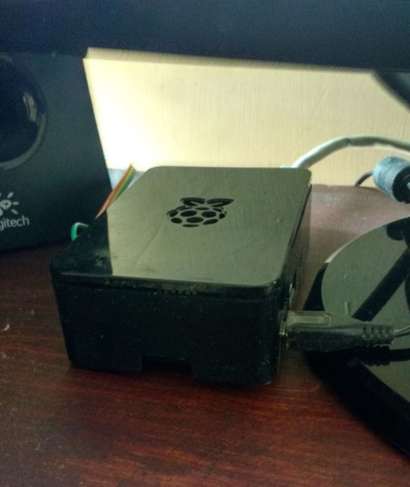

My self-hosting journey
I have been getting a bit too involved in self-hosting. I've been doing it for years, but in the last couple of months I started structuring it more seriously and following the self-hosted community more closely.
How it all started¶
It was the summer of 2006, it was (most likely) 45°C. I was the kid that loved spending time on his computer. Back then, I was already tinkering with software engineering without knowing it was going to become my career. I was self-hosting a web server with PHP using XAMPP on my Windows PC and a game server with Lua scripting capabilities. PHP and Lua were my introduction to the world of software development.
I had no idea what I was doing was a career, so I simply moved on with my life and got into mechatronics engineering.
My first bare-metal server¶
After some years of dealing with electronics, microcontrollers, Arduinos, I got my hands on my first bare-metal server: a Raspberry Pi 21. I believe my first HTTP servers were made by literally opening a TCP socket, not to save CPU cycles but because it was all I knew.
Something in this fashion:
sock = socket()
sock.bind(("0.0.0.0", 8080))
sock.listen()
conn, addr = sock.accept()
data = conn.recv(1024)
conn.send(b"hi")

So majestic and powerful — my first “bare-metal server”.
It wasn't until 2018 that I really started getting into Python when developing the early versions of NabBot2. Of course, its first home was the Raspberry Pi, or the "shoebox" as some people called it.
The deployment was very simple. At the time, I didn't know anything about Docker, so I just cloned the git repo, installed Python dependencies directly (What is venv?) and ran it with python3 main.py. The most advanced thing in my setup was using systemd so it would survive restarts.
Around that time, this side project started having an impact beyond my free time. Even though I had a degree in mechatronics engineering, working on NabBot and similar projects helped me land my first software engineering job. Without really planning it, software engineering became my day-to-day work rather than just a hobby.
My first VPS¶
Some months after NabBot's usage skyrocketed to thousands of Discord servers, it was time to move to a proper server, something that would not die if I tripped over the power cable (or sneezed near it). So I got a Start1-S3 instance from Scaleway. It was my first time having a server. Thanks to my Raspberry Pi, I already knew about SSH, headless servers and security basics.
The migration consisted of moving files over SCP and repeating nearly the same setup. By this point I already knew about venv, and the project consisted of multiple Python applications, so the process was very similar, clone multiple repos, create their venv and set them up on systemd. My only monitoring tool was Cockpit.
As time passed and the project kept growing, I jumped through instances and even providers, trying to find the best value for performance. The migration process was still annoying, but it was getting better. I started documenting every change I made so I could follow the same steps when setting up a new server.
Docker¶
At some point I learned about Docker. I must admit it took me a bit to grasp the concept, but I was seeing it mentioned everywhere and figured I had to try it. I started creating Docker images for my side projects and I really liked how it worked and how it made deployment easier.
I created Docker images for NabBot's applications, but I never deployed them, because I feared breaking the production environment — a fear that, in hindsight, was entirely justified — and I didn't have a proper staging environment to try it out. I did, however, deploy a couple of supporting applications using Docker.
Migration to Kotlin¶
Discord announced big changes to their bot system, almost at the same time that the Python library announced they were stopping development (spoiler: they came back). So I took the decision to migrate 6 years of development into a different language.
Sounds terrible, I know, but it was actually a very fun experience, it gave me a chance to rethink the project's architecture, after all, the Python version was how I learned Python, so even though there were a couple refactors there, the foundations of a beginner were still there.
Since I already had more experience with Docker, and no one wants to deal with a native JRE installation, the plan was to deploy this using Docker.
After a couple years of development, doubts, refactors, pain and tears, the Kotlin version was finally released, and we only had a couple hours of downtime.
One year later, we did the last migration, we moved to a VDS4. NabBot's home has come a long way!
Spare server¶
After the last migration, I was left with a spare VPS. I was going to get rid of it, but I was still running some random apps for tinkering purposes and I wanted to leave NabBot's server clean, so I ended up keeping this server for personal use.
I kept hosting and playing with random services, and when I realized it, I was already going down the self-hosting rabbit hole, and by then it was already too late.
In upcoming posts I'll talk more about my setup and the apps I use. This has all been a journey driven by curiosity and exploration.